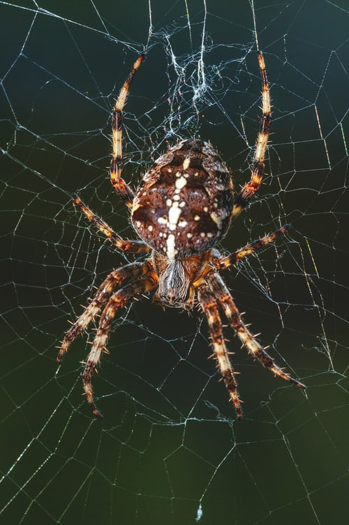

Why is Arthropod conservation important?
July 5, 2020 8:50pm IST We have all seen these tiny little creatures around us so many times, they can be seen inside your house, park, or office, they are everywhere. They have so many diverse and fascinating forms which makes them remarkably interesting, from Ant controlling caterpillars to Shrimp that can cause a sonic boom of 210 decibels by snapping its claws just like Thanos. Different people look at them with different perspectives, you may fascinate them or see them as pests, for some people they are beneficial and for some they may be harmful. No matter how you look at them, they are important for environment, for survival of humankind and every living being.
Arthropods are the most diverse animals, they account for 84% of all animal species, and these calculations based on just the known numbers, and as several people believe there are millions of species still waiting to be discovered. They are an especially important part of the ecosystem; from pollination to decomposition, the smallest yet important parts are done by insects and other arthropods. They form most primary consumers in several food chains and food webs. According to some studies the economic value of pollination service which is provided by insects free of cost is estimated to be about 100-200 million dollars. All these facts tell the importance of Arthropods. But even after knowing all this we are not able to prevent extinction of several species, and as each day passes, we are getting closer to the collapse of our ecosystem by our own hands, and if we do not change our ways, it is inevitable.
Owing to their small size and habitat, their census is quite difficult comparing to other animals. Keeping track of their populations is extremely hard. It is possible that several species might have gone extinct due to human activities even before they were discovered. arthropods are the biggest victims of deforestation, because most of the time their population and their environmental importance is not taken into consideration before human activities in their territories. thus, they are easily wiped out.
We need to find new methods to keep track of arthropod populations and to look for undiscovered species to conserve the future of our ecosystem. The easiest way to ensure safety of all species is to spread knowledge about them and keep people aware of the what will happen if we continue to deteriorate our ecosystem.
Author :
DEV BAGDI
.webp)
Related Articles
Communication in Insects
August 29, 2020 3:30pm IST
For humans, it is easier to communicate with each other. We have different languages which we speak and sometimes translate so that people from other countries can also understand.
Wiggle-Waggle For Survival
August 27, 2020 10:00am IST
While peacocks are known for their bonnie dance, these peacock spiders are known for hokey pokey dance showing off their stylish fans. Both perform to please the females,

Bioluminescence In Fireflies
July 5, 2020 11:51pm IST
Ever wondered why and how a Firefly(lightning bug) is able to light up?? Is it to scare away predators? or to communicate with its peers? or to produce heat for keeping itself warm? In this article we have covered answers to all such questions and more...
.webp)